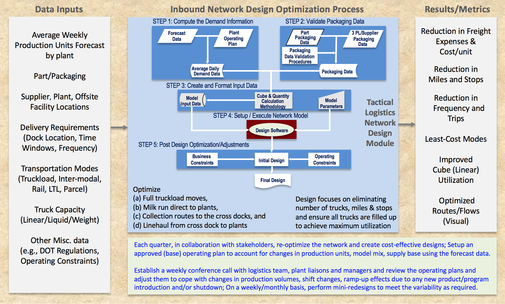

5–10%typical savings on logistics & supply chain spend
4 · 16phases · steps, with customer sign-off closing every phase
60–90days on-site, embedded in the client's team
What we do
Focus, approach and value proposition
Focus
ANIVA is a Delaware Corporation that focuses on:
Logistics network optimization
Network value / margin expansion
Low-cost (core) carrier setup
Bid proposal development
Performance measurement / KPI
Supply chain process compliance
Labor Demand Planning & Optimization
Process redesign / documentation
Low-cost country sourcing by collaborating with suppliers to assist U.S. companies in achieving lower total landed costs
Approach
Our proven 4-phase, 16-step design process guides us in creating the least-cost logistics and supply chain solution:
We become an integral part of our client's organization and help set up new logistics & supply chain capabilities (design, processes, training) and participate in deployment
We specialize in developing implementable cost reduction strategies and process improvement ideas
We spend 60-90 days at our client site in creating the solution(s) based on the customer need, size, and complexity
Value Proposition
Depending on our consulting projects, we generate cost savings of 5–10% of the clients' logistics & supply chain spend by:
Applying our expertise
Engaging key stakeholders
Conducting "what-if" scenarios
Participating in implementation
Our demonstrated methodologies with Valora, custom-built Excel-based models, off-the-shelf software packages and footprint tools give us the competitive edge to successfully solve our clients logistics and supply chain operational issues and exceed their expectations.
How we work
A proven, repeatable 4-phase, 16-step process
Our proven and repeatable 4-Phase, 16-step process offers a comprehensive logistics and supply chain design solution to our clients (from start to finish) in meeting or exceeding their operational performance goals and financial targets
I
Agreement
Objectives, scope, project team, start / end dates
›
II
Establish Current & Future State
As-is / to-be process flows, value propositions, data plan, tools
To make an immediate appointment for ANIVA Enterprises Logistics & Supply Chain Consulting services, please contact Dr. Mani Manivannan via email at mani@anivaenterprises.com
Explore
How we work and what we have delivered
Strategic
3 - 5 years
Logistics network optimization
Supply chain design
Warehouse & cross dock location/allocation
Inventory & material planning
Network value & contribution margin analysis
Tactical
1 - 3 months
Creating quick-win cost savings opportunities and identifying fast resolutions to supply chain operational issues
Performing current state analysis, value stream mapping, and evaluating gaps in the process and making appropriate recommendations to bring quick wins
Customer Engagements & Value Creation
Selected client work
Carrier procurement & bid strategy across ocean, air and truckload
End-to-end process redesign, SOPs, RACI and KPIs
Network profitability, balance and optimization
Customer Engagements & Value Creation
A sample of consulting engagements across trucking and air cargo, oil & gas, chemicals, automotive, beverage, retail, industrial services and consumer products. Client identities are withheld; each summary describes the situation, our role, and the value delivered at a high level. Use the filters to browse by theme, and expand any card for the detail.
A regional industrial-services contractor deploying company field labor and subcontractors across plant-outage, embedded on-site and general service work had little visibility into how its labor pool was being used and no structured way to pre-plan staffing for upcoming projects. ANIVA led discovery on site and built an integrated decision-support toolset the client's own team now runs.
ValueFull labor-utilization visibilityWhat-if staffing for future projectsMonthly KPI dashboard
What we did
Ran on-site discovery with the leadership team, documented scope and secured approval; reviewed planning processes and data across the three lines of business
Captured and cleansed a full fiscal year plus the current quarter of time, payroll, pricing and job data through weekly stakeholder reviews into a single source of truth
Designed and built an integrated toolset — customer quantification supporting a grow / fix / exit strategy, rolling 12-month labor-pool optimization, labor by customer, a daily labor-usage dashboard, a labor demand estimator for what-if pre-planning of company vs. subcontractor labor, and a stand-alone area-manager staffing tool
Deployed it as a centrally administered application on the client's platform with security, drill-down filters and visualizations; wrote the SOP / work instructions and delivered several weeks of hands-on super-user training
Defined KPIs and a monthly management dashboard, a prioritized list of improvement initiatives with owners and target goals, and a weekly / monthly / quarterly governance cadence
Value delivered
A deployed toolset the client's super-user refreshes independently, now producing monthly KPIs and the management dashboard
Daily, monthly and yearly visibility into labor usage and performance across all areas, and the ability to plan company labor vs. subcontractors before a project starts
A prioritized improvement roadmap and review cadence for the year ahead
A Fortune 10 retailer with a private fleet and a supplier-to-DC / DC-to-store network wanted to understand true network profitability beyond lane-level cost accounting, and to cut empty miles and lane cost across inbound and outbound flows. ANIVA developed a portfolio of opportunities anchored by a network profitability methodology.
Reviewed the existing lane-profitability model and developed a methodology to represent overall network profitability by business area, including an outbound P&L
Developed a Network Value Model to improve profitability and Total System Contribution by market area
Computed deadhead ratios by lane and shaped planning and execution solutions to reduce empty miles
Analyzed freight flows to build a headhaul / backhaul strategy that combines inbound and outbound networks
Framed asset-utilization modelling, control-tower improvements, transit-time reduction and one-way vs. dedicated lane optimization
Value delivered
A clear, prioritized roadmap for network profitability, empty-mile reduction, asset utilization and shorter transit times
A network-value lens — the same thinking that underpins Valora by ANIVA AI (below)
Network Value Model for a Flatbed Truckload Carrier
A private-equity-owned flatbed truckload carrier wanted a holistic, quantitative view of its network economics — which markets and lanes create or destroy value once upstream and downstream effects are counted — to guide pricing, sales, planning and operations, and to give its board a simple measure of network performance. ANIVA led the project with the client's BI, finance, operations, planning, sales and pricing teams.
Kicked off with a core client team, developed the scope document, and visited headquarters and a key facility to review operations, planning, pricing and data management
Captured and iteratively cleansed a full year of order-level operational and financial data — revenue, fixed and variable cost, fuel and accessorials, deadhead, dwell, detention, driver domicile and market definitions — into a master data set
Formulated and built the Network Value Model: pre-load, load and post-load margins per market area, a blended network value per market, and Total System Contribution for every origin-destination pair, capturing opportunity cost
Integrated network values into a mapping / BI tool with red-yellow-green ranking to spot best- and worst-performing and low-density markets
Built a pricing-support tab that scores bids and lanes on a TSC-based scale, recommends repricing before submission and sets minimum-rate guidelines
Produced a prioritized list of quick-win initiatives with owners — truck utilization, worst-operating-ratio trucks, dwell and detention, deadhead, bottom-customer repricing, driver best-practice sharing — and planned training, documentation and hand-over to the client's network team
Value delivered
A repeatable, refreshable decision-support model covering every market area in the network
Clear guidance on which markets and lanes to push, exit, reprice or remove, embedded in the bid process
A monthly / quarterly leadership review cadence and a board-level view of network value
04
Consumer Products · Global Sourcing2023
China Sourcing, Supplier Selection & Import Logistics for a Textile Start-up
An early-stage, founder-run consumer-products start-up launching bamboo-fabric apparel, bedding and pet products had no manufacturing base and no import supply chain. ANIVA acted as its outsourced sourcing and supply-chain lead for seven months — from supplier research through the first production shipments arriving at its U.S. warehouse.
ValueVetted supplier base in placeCustoms, tariffs & bond set upGoods landed for launch
What we did
Researched the bamboo-textile supply base, built and maintained a supplier pipeline dashboard, qualified candidates and presented scope, approach and proposal to the founders
Set up China-side support — a bilingual interpreter / coordinator and a local coordinator — and ran a weekly cadence of supplier meetings and virtual factory tours
Managed sampling and a face-to-face sample-selection workshop that narrowed the field to finalists; led finalist kick-offs on minimums, pricing, timing, fabric specifications, sizing, packaging, labelling and product-safety compliance
Benchmarked supplier quotes, consolidated all product and pricing proposals into one decision workbook, and negotiated sample-cost concessions
Handled import compliance — tariff classification, additional-duty determination, customs bond options, importer set-up, insurance and a foreign-trade-zone briefing — and trained the team on the tariff database
Gathered and normalized air, LCL and FCL quotes from multiple forwarders into a freight-cost comparison and logistics strategy; selected forwarders and routings by supplier
Built a locked, formula-driven shipping, receiving and inventory-tracking workbook linked to the client's SKU list; tracked shipments daily and cleared customs holds
Value delivered
A vetted supplier base — finalist manufacturers in production plus a specialist supplier onboarded — where none existed
A complete import supply chain: classification, duties, bond, importer set-up, forwarders and routings
Production goods moving by air and ocean and landing at the client's warehouse in time for launch, with working tools handed to the team
05
Automotive / EV · Order-to-Cash2022
Order-to-Cash Invoicing Process Review & SOP
A global lead-logistics (4PL) provider and its international freight-forwarding division, supporting a fast-growing electric-vehicle manufacturer, were seeing invoice rejections, rework and slow cash collection — with no documented procedure from shipment order to payment. ANIVA led a cross-entity review to build a robust, repeatable order-to-cash process with clear ownership.
ValueEnd-to-end O2C process & SOPClear RACI ownershipKPI framework
What we did
Scoped the review and interviewed stakeholders across the 4PL, the forwarder, the freight-audit firm and the customer; verified process artifacts against contractual obligations
Performed gap and root-cause analysis and delivered a findings readout
Designed an eleven-step order-to-cash process — from order receipt through execution, invoicing, audit, payment, close-out and KPI reporting — with swim-lane flows and a defined activity cadence
Built a RACI matrix assigning ownership of every activity across the three parties and authored a formal, controlled Standard Operating Procedure
Delivered a prioritized continuous-improvement register (24 opportunities), proposed KPIs and a monitor-and-maintain plan with quarterly reviews and change control
Value delivered
A validated, documented end-to-end order-to-cash process and SOP where none previously existed
Clear accountability, structural causes of rejections removed, and defined invoicing timelines
A KPI framework covering invoice timing and accuracy, unbilled shipments, rejections and receivables
06
Dry-Van Truckload · Publicly Traded2021 – 2022
Pricing & Network Strategy for a Truckload Carrier
A publicly traded dry-van truckload carrier — company drivers, owner-operators and a brokerage arm — wanted long-term profitability inside a contract-network structure: denser lanes and markets, more diversified customers, market-aligned rates and less out-of-network freight. It needed an objective, network-aware way to measure market and customer profitability and feed it into pricing and bids. ANIVA built the model behind that strategy.
ValueNetwork Value Model adopted by the network teamDenser lanes, less emptyMore selective bidding
What we did
Developed a Network Value Model on 52-week rolling truckload history from the TMS: pre-load, load and post-load profitability by market area, blended network value per zone, and Total System Contribution for origin-destination pairs including upstream and downstream opportunity cost
Delivered map-based red-yellow-green ranking of market areas by network value for quarter-over-quarter tracking
Enabled tracking of market profitability and customer network contribution at enterprise, origin and lane level
Provided what-if scenario capability for the network, pricing and sales teams and integrated the TSC metric into the pricing template
Supported the tiered network strategy (hub-to-hub, hub-to-neighbor, neighbor-to-neighbor, brokerage) and a network / pricing KPI framework — rate per mile, tier progression, lane density, empty percentage, bid funnel and scorecard
Value delivered
Lane combinations consistently decreased and empty percentage trended down as orphan markets were reduced and hub-tier share grew
Poorest-yielding freight managed up or out; better customer diversity and less dependence on single customers
Awarded bid volumes stayed strong while bidding more selectively; the model became the team's ongoing tool for monitoring network profitability
A large regional beverage bottler and distributor had drifted into heavy spot-market exposure as volumes grew and capacity tightened; earlier bids had been out of step with the budget cycle and lacked firm business rules and a routing-guide waterfall. ANIVA joined the client's core bid team to build an in-house bid capability and a dedicated-plus-one-way truckload network with guaranteed, contracted capacity.
Value90%+ of freight under contract (target)Guaranteed capacityIn-house bid capability
What we did
Defined the carrier procurement and bid strategy for a dedicated + transactional network and aligned it with leadership and stakeholders
Framed a "dedicated value delivery" model: strategic carrier relationships, guaranteed daily capacity at contracted rates with seasonal surge flexibility, service commitments and annual reviews
Designed the bid scope and packages — lane-level forecasts, dedicated bundles priced fixed-and-variable, one-way lanes at flat linehaul, fuel schedule and standard contract framework
Built a multi-attribute carrier evaluation (service, cost, quality, capability, capacity) with a scoring rubric, finalist reviews and best-value awards loaded into the TMS routing guide
Set the bid structure, a wide-net carrier invitation strategy and market timing supported by third-party freight forecasts
Laid out a 16-step process and deliverables roadmap and documented lessons learned from the prior bid
Value delivered
A network strategy targeting 90%+ of truckload freight under contract with published routing guides, sharply reducing spot exposure
Guaranteed capacity, more predictable service and more consistent pricing from an expanded, vetted carrier base
An institutionalized in-house bid capability — templates, cadence and rules the client now owns
08
Chemicals · Ocean Export2021
End-to-End Export Container Process Redesign Pilot
A Fortune 100 chemical manufacturer, mid-way through an enterprise process-transformation program, needed a state-of-the-art design for its international packaged-cargo (FCL export) process — something it could not achieve without a freight forwarder's expertise and systems. ANIVA worked on the forwarder's project team to co-design and pilot the new process with the shipper and its transformation consultants.
ValueShorter cycle timesLower carrying cost & detentionDigital-ready process
What we did
Co-defined the problem statement, statement of work, deliverables and scope boundaries; identified stakeholders and aligned a joint shipper / consultant / forwarder team
Documented current-state order-to-ship, booking and clean-order-review flows and articulated the benefit case
Designed the future-state framework: a forecasting cascade (annual → 90-day → 30-day), pre-booking, forecast-to-order reconciliation and an exception dashboard
Mapped forwarder tools (TMS, order management, EDI / API integration, tracking, e-docs, customer portal) to the design and captured IT assumptions and data requirements
Defined the pilot approach — design working sessions, RACI and documentation updates, business rules, sandbox testing, success criteria and lessons learned
Value delivered
A co-designed, digital-ready future-state process targeting shorter cycle times, lower inventory carrying cost and container detention, fewer hand-offs and better visibility
A tested proof-of-concept and documented design gaps for the enterprise program to build on
09
Oil & Gas Services · Lead Logistics2020 – 2021
Global Ocean & Air Freight Procurement
A global lead-logistics provider (4PL) implementing a managed-transportation program for a Fortune 500 oilfield-services company found much of the shipper's international ocean and air freight moving un-contracted at spot rates across every region of the world. ANIVA served as a core member of the bid team charged with bringing high-volume lanes under contract through a structured global bid.
ValueSpot → contract rates in every regionReusable global lane data setRepeatable scorecard awards
What we did
Consolidated and cleansed shipment history from multiple providers into validated global lane files by mode (air, FCL, LCL) with annualized volumes
Defined the bid strategy: lane segmentation (contract the volume, leave micro-lanes on spot), provider slate, regional compliance requirements, award terms and market timing
Designed bid packages and cost-breakdown structures for air service levels and ocean port-to-port pricing
Ran a two-round global RFQ, compiled and normalized responses, and estimated total cost by provider
Built a scorecard-based selection methodology (price, quality, transit time, tracking / IT capability) to rank providers and assign primary, secondary and tertiary awards by lane and mode
Supported baseline finalization, savings estimation, contract award and lessons-learned close-out; ran a parallel domestic flatbed, truckload and LTL bid
Value delivered
Structured, contract-based ocean and air procurement across all regions, replacing largely spot-rate operations
A clean, reusable global lane data set for bidding, baselining and ongoing management
A repeatable, transparent scorecard award process the client can run again
10
Air Cargo · Terminal Operations2016
Cargo Terminal Operations Review for an Island-Market Air Cargo Carrier
A regional inter-island air cargo carrier — an operating company of a diversified transportation group — had just moved into a new, larger cargo facility and was about to install a roller-deck system, yet its operation showed excess handling, no put-away or picking discipline and fixed crew sizes regardless of workload, with productivity per employee slipping. ANIVA reviewed day and night operations on site and delivered a prioritized improvement plan to leadership.
ValuePrioritized improvement planNew productivity KPIVariable labor model
What we did
Observed aircraft off-loading, breakdown, build-up, loading and interline handling across day and night shifts; interviewed operations staff and reviewed schedules, workforce grouping, the roller-deck layout and the action list
Gave real-time feedback during the visit and an end-of-visit recap and prioritized opportunity list to leadership
Recommended an integrated facility layout using industrial-engineering methods (activity-relationship and freight-flow analysis) and a detailed roller-deck operating process with roles, SOPs, cross-training and hard / soft savings tracking
Proposed labor models — staggered crew start times, a hybrid fixed / variable workforce, seasonal adjustment, standardized loader crews and a volume-driven crew model for the mainland wide-body flight
Identified revenue and margin levers (cube- vs. weight-based pricing, storage and dwell fees, premium handling for late freight), equipment rationalization and multi-stop schedule optimization
Designed a facility-level productivity KPI (hours per unit load) with baseline and goal, and an operations cost-control process to manage projects and validate savings with finance
Value delivered
A prioritized set of roughly a dozen process, cost and revenue opportunities delivered to leadership
A new operational KPI and measurement framework to prove the benefit of the roller-deck investment
A labor model that flexes with volume instead of fixed crews
11
Trucking & Logistics · Multimodal2014
Network Analysis & Cost-Reduction Roadmap for a Northern-Market Carrier
A truckload, LTL, flatbed and multimodal carrier — an operating company of a diversified transportation group — links a lower-48 gateway terminal by ocean sailing to a network of terminals in a remote northern market. It had rich revenue data by lane but little visibility into lane-level operating cost, relied on tribal knowledge with no route- or load-planning tools, and was spending heavily on leased trailers and fragmented purchased transportation. ANIVA analyzed the network end to end and delivered a prioritized cost-reduction roadmap.
Visited the two main gateway / hub terminals; interviewed process owners on loading, distribution, dispatch and planning-tool needs
Analyzed eight months of network data — terminal footprint, origin / destination zones, pickup-and-delivery, line-haul and purchased-transportation moves by mode with mileage, weight and cost; trailer usage between hubs; northbound manifests for consolidation opportunities
Benchmarked purchased-transportation cost per mile and per pound against target ranges and designed a consolidated carrier RFQ with a decision matrix and on-boarding process
Analyzed the leased trailer pool and its root causes and proposed a centralized trailer-control process
Recommended better load preparation at the gateway and pickup-and-delivery / line-haul optimization using route-optimization software (cluster, meet-and-turn, zone and milk-run designs) with illustrative routes for several terminals
Identified further opportunities — cross-dock rate benchmarking, daily hub tag-ups, dispatcher tools, workforce model, terminal rationalization, scanning, volume leveling — and delivered a Transportation Cost Control tracking process with a weekly cadence
Value delivered
Four prioritized initiatives — consolidated procurement, trailer equipment management, load preparation and route optimization — with a substantial combined annualized savings opportunity, plus eight further opportunities identified
A governance process and template to track savings against target every week
A path from reactive "you call, we haul" operations to planned, tool-supported routing
Common threads
We join the client's team and work on-site, from data capture through implementation
Every engagement leaves behind a repeatable process — templates, scorecards, models, SOPs and KPIs the client owns
Value is measured against a baseline the client agrees to before the work begins
Data collection involves part packaging info., supplier, plant location data, delivery needs, dock constraints, transportation modes, truck capacity, and other critical information
Sample Tactical Supply Chain Analysis
Route, cube, frequency & mode optimization
Evaluate opportunities for (new) service provider agreements & existing carrier contracts to achieve cost reduction
Optimize material flows to (and within): warehouses, distribution centers, sequencing, subassembly, cross docks
Operating plan creation and validation of inbound logistics designs
Redesign by challenging existing policies, work rules, and other operational / design processes

Introducing
Valora by ANIVA AI
A network value creation application for truckload carriers — pricing, network balance, load selection and customer profitability in one place.
Load valueTSCTotal System Contribution
=
Profiton the loadrevenue − cost
+
Network valueat destinationwhere the truck ends up
−
Network valueat originwhere the truck started
Measured per truck-day and per load, for every market — not rate per mile.
The idea
Rate per mile hides where a fleet actually makes money. Valora measures every load by its Total System Contribution — the profit on the load plus the change in network value between where it ends and where it starts — per truck-day and per load, for every market.
What it delivers
Network value per truck-day for every market and lane
A weekly-refreshed reprice list and customer ranking by net opportunity
Market imbalance analysis with surplus / shortfall pairing for sales and dispatch
Round-trip lane-pair scoring and shipper dwell benchmarking
A live dispatch menu that rescores as a rate is typed
How we start
1
Assessment (4 – 6 weeks) — your data, your number
2
Build & go-live (4 – 8 weeks)
3
Full roll-out (first year), value tracked against the assessment
Runs on your own leg-level history — no system integration required. Built for regional and national fleets of roughly 500 to 2,000+ tractors.